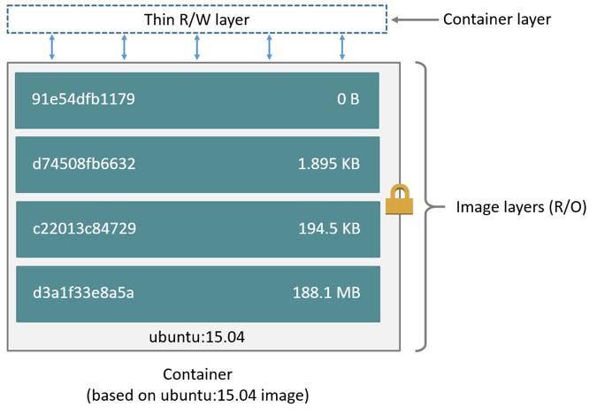

Minimizing Clear Linux* OS container sizes
30 Aug, 2019
Minimizing Clear Linux* OS container size via a multi-stage build
By Jianjun Liu, Rusty Lynch, and Qi Zheng
Introduction
This document describes how multi-stage build (a feature introduced in Docker* 17.05) helps to minimize the size of Clear Linux* OS containers, as well as minimizing the Clear Linux OS bundle size itself. We explain how we used multi-stage build to significantly reduce the size of the clearlinux/redis Dockerfile from 225MB to 55.9MB.
Concepts
A Docker image is a lightweight, stand-alone, executable package that includes everything needed to run a piece of software, including the code, a runtime, libraries, environment variables, and configuration files. It’s an immutable Docker container.A Dockerfile contains all the commands to build a Docker image.
A Docker container is a runtime instance of a Docker image—what the image becomes in memory when actually executed. It runs completely isolated from the host environment by default, only accessing host files and ports if configured to do so.
A Docker image is built up from a series of layers. Each layer represents an instruction in the image’s Dockerfile. Each layer except the very last one is read-only.
Reducing Docker image size is important for saving disk space, for quickly deploying images across a network, and for running on devices with limited storage size.
Multi-stage build
The multi-stage build feature allows you to create multiple intermediate images from the same Dockerfile. With multi-stage builds, you use multiple FROM statements in your Dockerfile. Each FROM instruction can use a different base, and each of them begins a new stage of the build. You can selectively copy artifacts from one stage to another, leaving behind everything you don’t want in the final image. For example, multi-stage build can allow you to have a smaller final image by not including your application build dependencies.
You can read more about multi-stage builds here.
clearlinux/redis without a multi-stage build
The original clearlinux/redis Dockerfile was created based on a single-stage build, with clearlinux:latest as the base layer.
FROM clearlinux:latest
MAINTAINER
ARG swupd_args
RUN swupd update --no-boot-update $swupd_args
RUN swupd bundle-add redis-native $swupd_args \
&& rm -rf /var/lib/swupd/* \
&& mkdir /data && chown redis:redis /data
VOLUME /data
WORKDIR /data
COPY docker-entrypoint.sh /usr/local/bin/
RUN chmod +x /usr/local/bin/docker-entrypoint.sh
ENTRYPOINT ["docker-entrypoint.sh"]
EXPOSE 6379
CMD ["redis-server"]
Image size analysis
The command docker history <image> shows the history of an image building process, including layer size information. This command was used to analyze the clearlinux/redis image and the diagram below shows the size information of the main layers.
There are three parts that compose the clearlinux/redis image size:
- Base layer: contains content corresponding with the “
FROM clearlinux:latest” line in the Dockerfile and a size of about 150MB. - Swupd update layer: contains content corresponding with the "
RUN swupd update...." line in the Dockerfile. This layer contains newer versions of the same files as the base layer, so its size could change from tens to hundreds of MBs depending on how many files changed in the updated Clear Linux OS release. - Application layers: contains the left contents corresponding with the RUN swupd bundle-add redis-native……, COPY docker-entrypoint.sh /usr/local/bin/, and RUN chmod +x /usr/local/bin/docker-entrypoint.sh in the Dockerfile. Its size was 5.32MB.
The next step was to further analyze the layer contents, using the command swupd bundle-list to list all bundles installed, and find package lists in bundle files.
The base layer, "FROM clearlinux:latest", consists of two bundles, os-core and os-core-update, with packages listed as described below:
|
Bundles |
Bundle Description |
Package Name |
|
os-core (72MB, 31 packages) |
Provides packages necessary for running a minimal Linux userspace. |
ca-certs-static, clr-power-tweaks, clr-systemd-config, cnf, coreutils-bin, dbus-autostart, dbus-bin, dist-pam-configs, e2fsprogs-bin, filesystem, gawk-bin, glibc-utils, grep-bin, hostname-bin, iproute2-bin, kmod-bin, nano-bin, nano-data, netbase, nettle-lib, nss-altfiles, procps-ng-bin, sed-bin, shadow, systemd-bootchart, systemd, systemd-lib, tzdata-minimal, util-linux-bin, systemd-networkd-autostart-extras, bash-bin |
|
os-core-update (78MB, 27 packages) |
Provides packages for running the Clear Linux OS updater, swupd. |
btrfs-progs, bzip2, clr-boot-manager-autostart, clr-boot-manager-bin, clr-boot-manager-services, clr-bundles, clr-find-bundle, clr-hardware-files, clr-one-shot-updates, clr-service-restart-bin, clr-update-triggers, efibootmgr-bin, findutils-bin, gzip-bin, pigz-bin, swupd-client, swupd-overdue, tar-bin, xz-bin, findutils, glib-lib, icu4c-lib, libstdc++, gcc-libs-math, glibc-lib-avx2, pacrunner, p11-kit |
Since os-core already provided the necessary components to run a minimal Linux userspace, we created a new container called clearlinux/os-core that only contain the os-core bundle to serve as a base for other containers.
We decided to remove os-core-update completely from the new Dockerfile, because it contains software that is not relevant in a container context and a new container image for clearlinux/redis is published daily.
The swupd update layer runs the Clear Linux OS command, swupd update, to sync all package files to the latest version into the current layer. A Docker image is built up from a series of layers. Each layer represents an instruction in the image’s Dockerfile. Each layer except the very last one is read-only. So the older files in the above base layer are still there. This added bloat to the container that, by definition, cannot be used by the target application. If the base layer always has the updated version, this layer can be removed.
The application layer, RUN swupd bundle-add redis-native…, contains the necessary package to run the end user target application. There is only one package, redis-native, included. No further size minimization is needed on this layer for clearlinux/redis.
|
Bundles |
Package Name |
|
redis-native(5.32MB) |
redis-native |
clearlinux/redis with multi-stage build
Based on our analysis, we created a new clearlinux/redis Dockerfile with the updates described below:
FROM clearlinux:latest AS builder
# Move to latest Clear Linux release to ensure
# that the swupd command line arguments are
# correct
RUN swupd update --no-boot-update $swupd_args
# Grab os-release info from the minimal base image so
# that the new content matches the exact OS version
COPY --from=clearlinux/os-core:latest /usr/lib/os-release /
# Install additional content in a target directory
# using the os version from the minimal base
RUN source /os-release && \
mkdir /install_root \
&& swupd os-install -V ${VERSION_ID} \
--path /install_root --statedir /swupd-state \
--bundles=redis-native,findutils --no-scripts
# For some Host OS configuration with redirect_dir on,
# extra data are saved on the upper layer when the same
# file exists on different layers. To minimize docker
# image size, remove the overlapped files before copy.
RUN mkdir /os_core_install
COPY --from=clearlinux/os-core:latest / /os_core_install/
RUN cd / && \
find os_core_install | sed -e 's/os_core_install/install_root/' | xargs rm -d || true
FROM clearlinux/os-core:latest
MAINTAINER
COPY --from=builder /install_root /
RUN mkdir /data && chown redis:redis /data
VOLUME /data
WORKDIR /data
COPY docker-entrypoint.sh /usr/local/bin/
RUN chmod +x /usr/local/bin/docker-entrypoint.sh
ENTRYPOINT ["docker-entrypoint.sh"]
EXPOSE 6379
CMD ["redis-server"]
The base layer contains content corresponding with the “FROM clearlinux/os-core:latest” in the Dockerfile. The os-core bundle is included and the os-core-update bundle is not. Within the os-core bundle, certain packages, such as: “systemd-*”, “nano-*”, and “dbus-*”, have been removed as they are not necessary in a Docker environment.
|
Bundles |
Package Name |
|
os-core(48.6MB, 16 packages) |
bash-bin, ca-certs-static, coreutils-bin, dist-pam-configs, e2fsprogs-bin, filesystem, gawk-bin, glibc-utils, grep-bin, hostname-bin, nettle-lib, sed-bin, shadow, tzdata-minimal, util-linux-bin + glibc-lib-avx2 - systemd-bootchart, systemd, systemd-lib, systemd-networkd-autostart-extras, clr-power-tweaks, clr-systemd-config, cnf, dbus-autostart, dbus-bin, iproute2-bin, kmod-bin, nano-bin, nano-data, netbase, nss-altfiles, procps-ng-bin |
These modifications reduce the base layer size from the original 150MB down to 48.6MB. Because clearlinux/os-core is the base layer of most of clearlinux/* container images, its size reduction has a multiplicative effect on saving storage disk space because all container images will share the same base layer.
In the swupd update layer, all software package files are always the latest version because clearlinux/os-core is updated daily. No “swupd update” is needed to update package files.
In the application layer, a multi-stage build is implemented to install the redis application in the builder stage build by copying only the redis application to the target in the target stage build. This is done during the building process because os-core-update has been removed from base layer to save space.
- In the builder stage, run "
FROM clearlinux:latest" with the updater function, "swupd", supported.FROM clearlinux:latest AS builder RUN swupd update --no-boot-update $swupd_args - Inherit the Clear Linux* version from its base layer (clearlinux/os-core for clearlinux/redis).
COPY --from=clearlinux/os-core:latest /usr/lib/os-release / - Install application, redis, onto /install_root. Because os-core will be installed by default, remove package files of os-core from /install_root. Then there are only package files of redis application left.
RUN source /os-release && \ mkdir /install_root \ && swupd os-install -V ${VERSION_ID} \ --path /install_root --statedir /swupd-state \ --bundles=redis-native,findutils --no-scripts RUN mkdir /os_core_install COPY --from=clearlinux/os-core:latest / /os_core_install/ RUN cd / && \ find os_core_install | sed -e 's/os_core_install/install_root/' | xargs rm -d || true - In the target stage, copy the application function (redis-native), onto the base layer (clearlinux/os-core):
COPY --from=builder /install_root /
After implementing all of the techniques above, the total container image size was reduced from the original 225MB down to 55.9MB, as shown in the diagram below.
clearlinux/* with multi-stage build
You can use the multi-stage build method described for clearlinux/redis to modify other clearlinux/* Dockerfiles.
Most Clear Linux applications use clearlinux/os-core as the base layer like clearlinux/redis does. However, there are still a few Clear Linux applications that are built based on a different Clear Linux application. One example is clearlinux/cgit, which is based on clearlinux/httpd.
In the clearlinux/cgit Dockerfile, clearlinux/httpd is the base layer, instead of clearlinux/os-core. The cgit application package files are generated in the builder stage, and copied to the target in the target stage.
Here is the clearlinux/cgit Dockerfile after it has been modified for multi-stage build:
FROM clearlinux:latest AS builder
# Move to latest Clear Linux release to ensure
# that the swupd command line arguments are
# correct
RUN swupd update --no-boot-update $swupd_args
# Grab os-release info from the minimal base image so
# that the new content matches the exact OS version
COPY --from=clearlinux/httpd:latest /usr/lib/os-release /
# Install additional content in a target directory
# using the os version from the minimal base
RUN source /os-release && \
mkdir /install_root \
&& swupd os-install -V ${VERSION_ID} \
--path /install_root --statedir /swupd-state \
--bundles=sudo,curl,scm-server,httpd --no-boot-update
# For some Host OS configuration with redirect_dir on,
# extra data are saved on the upper layer when the same
# file exists on different layers. To minimize docker
# image size, remove the overlapped files before copy.
RUN mkdir /os_core_install
COPY --from=clearlinux/httpd:latest / /os_core_install/
RUN cd / && \
find os_core_install | sed -e 's/os_core_install/install_root/' | xargs rm -d &> /dev/null || true
FROM clearlinux/httpd:latest
COPY --from=builder /install_root /
COPY cgitrc /etc/cgitrc
COPY httpd-cgit.conf /etc/httpd/conf.d/httpd-cgit.conf
Summary
The Clear Linux OS team is constantly looking for ways to optimize system and application software to provide a performant and desirable experience. This includes our Docker images for cloud and developer use cases.
With the multi-stage build method described in this article, most of the Clear Linux* Dockerfiles at github have been updated for size optimization. We encourage you to check out our images on Dockerhub and customize the Dockerfiles for your needs. You can also use the same method to optimize your own Clear Linux* based Dockerfiles.
If you have questions and feedback, please submit them to https://github.com/clearlinux/dockerfiles/issues. We are eager to hear any feedback from you.